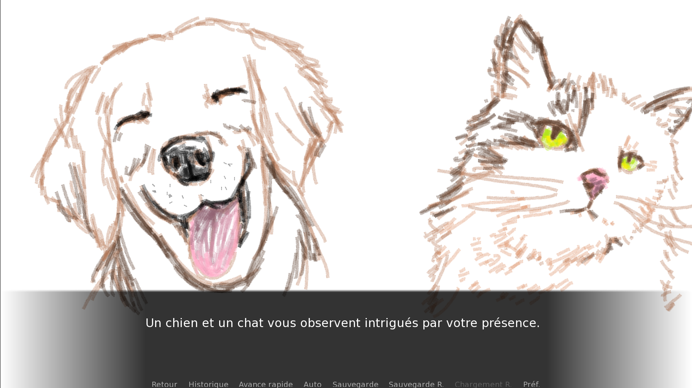
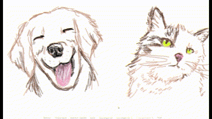
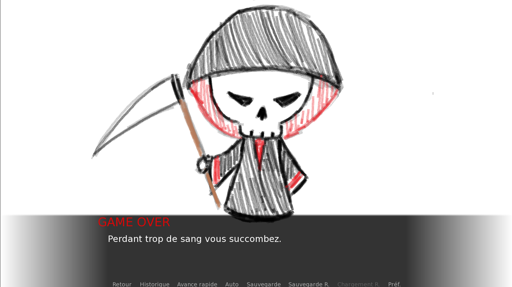
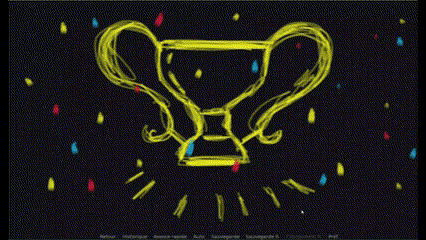

À propos
Des fraises et des roses est un jeu narratif dans lequel le joueur fait des choix pour progresser dans l’histoire et en atteindre la fin.
Projet personnel · Jeu narratif
Une histoire interactive où les choix du joueur dessinent le chemin jusqu’à la fin.
En images




Des fraises et des roses est un jeu narratif dans lequel le joueur fait des choix pour progresser dans l’histoire et en atteindre la fin.